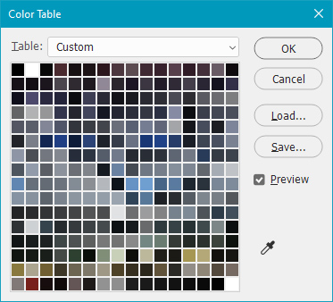

Sly Llama, July 2020
FSX Panel Editing
Premise
In spite of the almost exclusive use of 3D virtual cockpits in flight simulators these days, I really do love the classic 2D panels, and I think that a lot of rewarding mechanical and cosmetic work could be done to improve the use and look of these utilities. I am proposing two broad modifications:
- Modularisation. 2D panels in FSX currently feature, for the most part, a single “main” panel, with interface buttons to instantiate others. Now that dual monitors have become prevalent and layouts can be easily reconfigured, I think that we could experiment with a set of modular panels that can be moved around at will. This would allow the user to add a module of their most used gauges at the bottom of the screen (airspeed, altitude, and so on), and access other utilities (such as lights) as needed. This modularisation could incorporate hardware gauges sitting on the pilot’s desk, so that information isn’t unnecessarily repeated.
- Improved cosmetics. Delving into the simulator’s image files reveals that the panel textures are only 1024 × 768 pixels in size, whereas the monitor is, of course, 1920 × 1080 pixels at least – which means that a lot of stretching and upscaling is being done. This isn’t to say that the designs aren’t good, though: looking at the colour index reveals just how far the developers have made 256 colours go:

- But computer technology has come far since the release of FSX in 2006, and now we can afford to have images with larger resolutions and more colours. We can take advantage of this by using tools such as Photoshop and Blender to build new, realistic panel images which closely reflect their real-life counterparts.
Some Notes on Modding
There are two variants of gauge in FSX: the original, C/C++-compiled gauges (usually .gau or .dll files), or the newer, non-compiled XML versions (compressed into .cab files). While it is my hope that every gauge could be remade in XML form (as they are much easier to understand and interact with from a programming perspective), when working with cosmetics to fulfil principle (2), one occasionally needs to delve into executable files to modify their contents.
When it comes to extracting files for editing, it is easiest to use 7-Zip; this allows for the opening of .dlls as directories. However, committing modifications to these executables is another story, and two things need to be taken into account:
- A proper executable modification tool needs to be used to replace bitmaps in such files; I’ve found Resource Hacker to be perfectly suitable for this task.
- A
.dll which is edited after being signed (all vanilla gauges are “certified”) will be blocked by FSX’ security feature. The best solution I’ve found so far is to “unsign” the file after editing it using Microsoft’s SignTool utility. (Note that you will need to go hunting for the executable as it is not added to the system’s path. You should either add it to your path or write a batch file which will take care of the typing for you.) Once you have removed the certificate, FSX will ask again whether you want to load the executable, and after saying “yes” it should add the permissive reference to your configuration file (fsx.cfg).
- (Just a quick word on that configuration file: notice how all of the file references end in either “2” or “-2”; a “2” denotes that a file was accepted in the past, and a “-2” tells the system not to load that file. Occasionally these references need to be purged.)
I’ve found some good examples of XML gauges here which should be worth investigating.